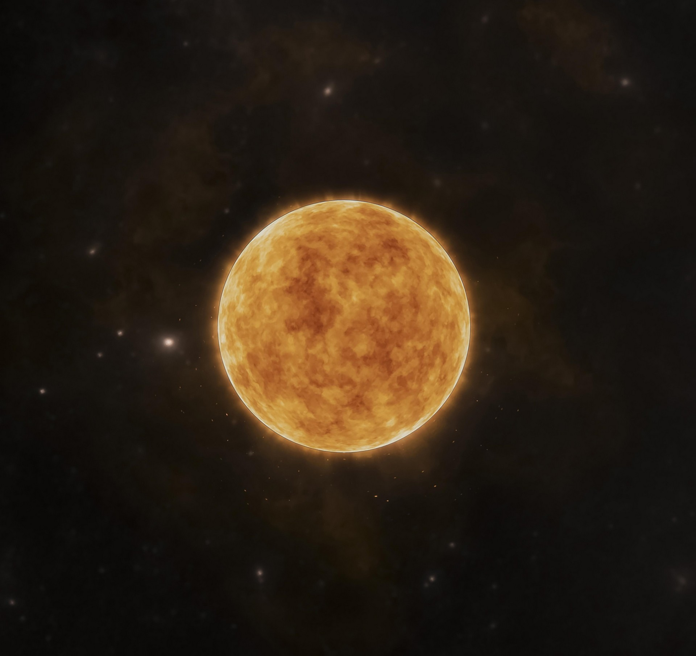
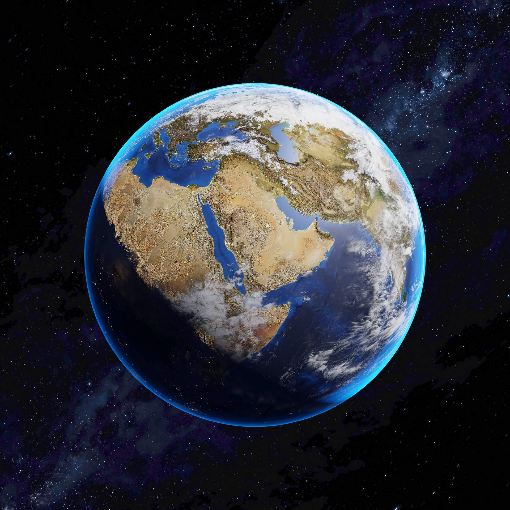
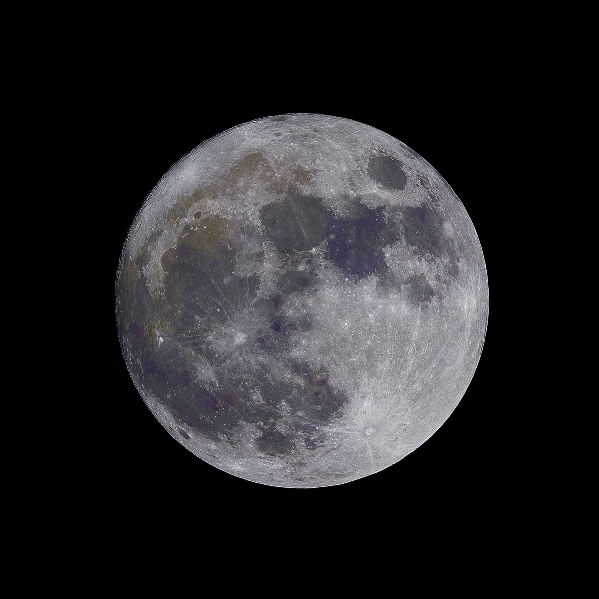
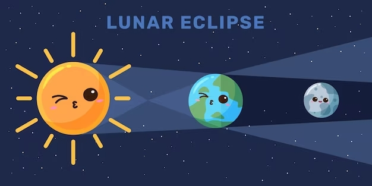
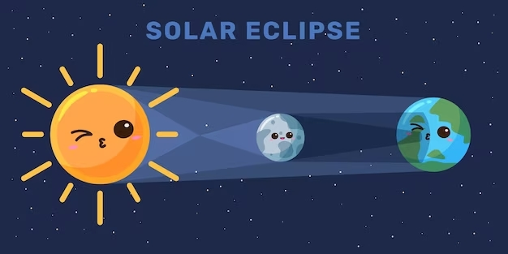

¡Hola! Bienvenido a la página de los eclipses, donde vas a aprender muchas cosas interesantes. ¿Has visto alguna vez que el Sol o la Luna cambian de forma o de color? Eso se llama un eclipse, y pasa cuando otro objeto se pone en medio de ellos y la luz o podemos decir que los tres que colocan como en linea recta, uno adelante de otro, y hay dos tipos de eclipses: los de Sol y los de Luna.
En esta página, te vamos a contar más sobre estos eclipses, cómo ocurren, cuándo y dónde se pueden ver, y cómo hacerlo sin lastimarte los ojos. También podrás jugar con un laberinto temático, ver fotos y videos de eclipses que ya pasaron, y aprender mucho sobre los eclipses. ¿Te gustaría saber más sobre los eclipses?
¡Acompáñanos!
Nuestros Protagonistas
Para que podamos ver un eclipse necesitamos a tres protagonistas, que son la Tierra, la Luna y el Sol, pero ¿quénes son ellos?

El Sol
El Sol es una estrella gigante la cual puedes ver durante el día ya que ella es quien nos ilumina

La Tierra
La Tierra es el planeta donde nosotros vivimos, la cual gira alrededor del sol y sobre si misma.

La Luna
A la Luna le llamamos un satélite de la Tierra, ya que esta gira al rededor de nuestro planeta y gracias a la luz que recibe del Sol nos ilumina un poquito en la noche.
¿Por qué hay eclipses?
El Sol, la Luna y la Tierra son como tres amigos que juegan juntos en el espacio. El Sol es el más grande y el más brillante, y siempre está quieto. La Tierra es más pequeña que el Sol, y le da vueltas alrededor. La Luna es más pequeña que la Tierra, y le da vueltas a ella. El Sol y la Luna le tiran de la Tierra con una fuerza invisible que se llama gravedad, y eso hace que la Tierra se incline un poco y que la Luna no vaya siempre por el mismo camino.
A veces, la Luna se cruza con el camino de la Tierra alrededor del Sol, y se pone justo en medio de ellos. Otras veces, la Tierra se cruza con el camino de la Luna alrededor de ella, y se pone justo en medio de ellos. Cuando esto pasa, se forma una fila con el Sol, la Luna y la Tierra, y uno de ellos queda tapado por otro. Esto se llama un eclipse, y hay dos tipos: los de Sol y los de Luna.
Los eclipses son como un juego de escondite entre el Sol, la Luna y la Tierra. A veces, la Luna se esconde detrás de la Tierra, y se ve roja. Otras veces, la Luna se esconde delante del Sol, y lo tapa todo o una parte. Los eclipses no pasan muy seguido, porque la Luna no siempre está en el lugar correcto para hacerlos. Para verlos, hay que estar atentos al calendario, y usar unos lentes especiales o un telescopio con filtro para cuidar los ojos. Los eclipses son muy bonitos y nos enseñan cómo se mueven los amigos del espacio.
¿Qué es un eclipse de luna y un eclipse de sol?
Eclipse Solar
En un eclipse solar o de sol, la Luna está entre el Sol y la
Tierra entonces la sombra de la Luna se ve desde la Tierra, tapando la luz del Sol y
causando mucha o poca oscuridad y de puede ver una orilla roja al rededor de la sombra de la Luna.
Eclipse Lunar
En un eclipse de luna o lunar, la Tierra está entre el Sol y la
Luna. La sombra de la Tierra cae sobre la Luna, causando que se ponga oscura o se
vuelva de un color rojo.
¿Quieres ver cómo se ven las posiciones de nuestros amigos para que veamos los eclipses desde nuestro planeta Tierra? Dale click a las flechitas para averiguarlo 👀

Eclipse Lunar
Diseñado por liyaasl / Freepik

Eclipse Solar
Diseñado por liyaasl / Freepik
¿Qué tan seguido podemos ver eclipses?
Los eclipses no pasan siempre, sino unas pocas veces al año. A veces hay más y a veces hay menos, depende de cómo se muevan el Sol, la Luna y la Tierra. También depende de dónde estés en la Tierra, porque no todos los lugares ven los mismos eclipses.
Los eclipses de Sol son más difíciles de ver, porque solo se ven desde algunos lugares de la Tierra. Los eclipses de Luna son más fáciles de ver, porque se ven desde cualquier lugar donde puedas ver la Luna durante el eclipse.
¿Qué es la temporada de eclipses?
Las épocas donde podemos ver eclipses se llaman temporadas de eclipses, y hay dos cada año. La Luna le da vueltas a la Tierra, y la Tierra le da vueltas al Sol. Pero la Luna no va siempre por el mismo camino, sino que a veces va un poco más arriba o más abajo. Esto hace que la sombra de la Luna no le pegue a la Tierra, y no haya eclipses. Pero en las temporadas de eclipses, la Luna va por un camino que hace que su sombra le pegue a la Tierra, y entonces sí hay eclipses.
¿Por qué no todos podemos ver un eclipse al mismo tiempo?
Lastimosamente no todos podemos ver el mismo eclipse, porque por ejemplo en un eclipse solar, la sombra de la Luna es muy chiquita y solo le pega a un pedacito de la Tierra. Ese pedacito se llama el camino de totalidad. Las personas que están en este camino ven el eclipse total, que es cuando el Sol se tapa todo. Las personas que están cerca del camino de totalidad ven el eclipse parcial, que es cuando el Sol se tapa una parte. Las personas que están lejos del caminode totalidad no ven ningún eclipse.
El camino de totalidad cambia según cómo se pongan el Sol, la Luna y la Tierra. También cambia según cómo sea la sombra de la Luna, que puede ser más grande o más chica, y más redonda o más alargada. El camino de de totalidad es muy especial, y solo pasa por algunos lugares de la Tierra cada vez que hay un eclipse.
¡Hora de divertirse!
Espero hayas aprendido mucho sobre los eclipses y les enseñes a tus amigos sobre ellos. ¡Te invitamos a jugar un divertido laberinto donde tendrás que encontrar la salida usando pistas sobre el Sol, la Luna y la Tierra! ¡Pero cuidado! No te pierdas en el espacio, y trata de llegar al final lo más rápido posible. ¿Estás listo para el desafío? ¡Entra al laberinto y empieza a jugar!